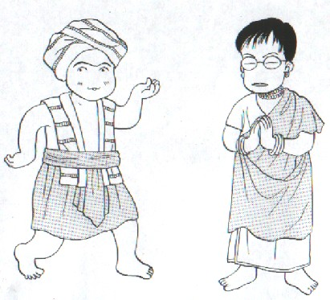

今月の20日でめでたく１周年を迎える。といっても、特にイベントなどは考えていない。（笑） 感想も特にないが、振り返ってみれば、いままで百メートル競争のような調子で走ってきたか、という感じ。これからはマラソンとまでは云わないまでも、１万メートル競争ぐらいの感覚で走っていった方がいいのかも。
あと思うことは、ホームページ作成ノウハウが少し身に付いたということか。といっても、サポーターには「なんと物覚えの悪い生徒だ」、と云われている。（笑） おんなじことを何度も聞く、同じ失敗を何度も繰り返す。しかし少なくとも１年前の今頃は、デジカメ画像はもとより、リンクの張り方も知らなかったぞ。それを思えば、長足の進歩だ。(^0^； ま、これからは、ちとゆっくりやるべえ。
先月の30日から今日まで、毎日、なんらかのカテゴリーを更新している。もちろん、別にずっと毎日更新することに決めたわけではない。９月30日から10月５日までは、たまたま少し時間があったので、１本ずつ更新してきただけ。
ただ10月５日になって、「お、そういえば、あと15日ほどで１周年！」と気がついた。それならせっかくの記念月、ここまで５日ほど
“毎日更新” が続いているのだから、10月20日までこのまま頑張ってみよう、と思った。
それから今日までたったの10日。しかし眠たい日もあるし疲れている日もある。最初の数日間はどうということはなかったが、それがすぎたあとは結構負担だった。(-_-；
別に“毎日更新”を止めたって誰も怒らないと思うが（笑）、せっかくなので10月20日まであと数日、なんとか頑張ろうと思ってる。
その間、いろいろの新カテゴリーを考えた。このサイトには多くのカテゴリーが作ってあるが、みんなσ(-_-)に関連したカテゴリーばかり。まぁ、当たり前といえば、当たり前だが。
しかしσ(-_-)が今日あるのは、多くの先人のおかげ。その先人たちはσ(-_-)なんかが足下にも及ばないような多くの業績を残している。もちろんその業績は、いろんな形で紹介もしてきた。
しかしその著作を目のあたりにできるのは、一部の人たちだけ。そこで戦前の戦術論やルール論、研究論などを紹介するカテゴリーを作ることにした。といってもかなりの量があるので、ある程度の取捨選択はやむを得ないが。
それでもかなりの量にのぼるものを、UPできる状態にするには時間がかかる。さっき云ったように、10月20日すぎたら少しペースを落としたいと思っている。そこでこれらの新カテゴリーも、UPペースはちとゆっくりになると思ふ。
※戦前の戦術論は新カテゴリーのClassicTactics 古典戦法。
中国格言も新カテゴリーのChineseMaxim 中国格言。
ルール論はTreatise 論考。
研究はResearch 研究室。
ルール論はTreatise 。
論考、研究はResearch 研究室
それ以外のものは、それ相応のカテゴリーでUPの予定。
ということで、今後ともよろしくm(_ _)m
|